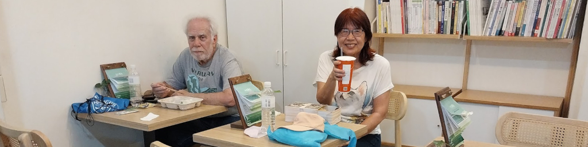
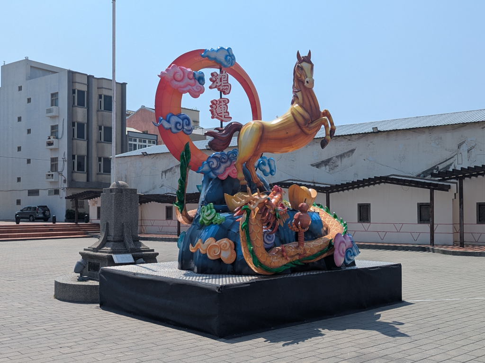
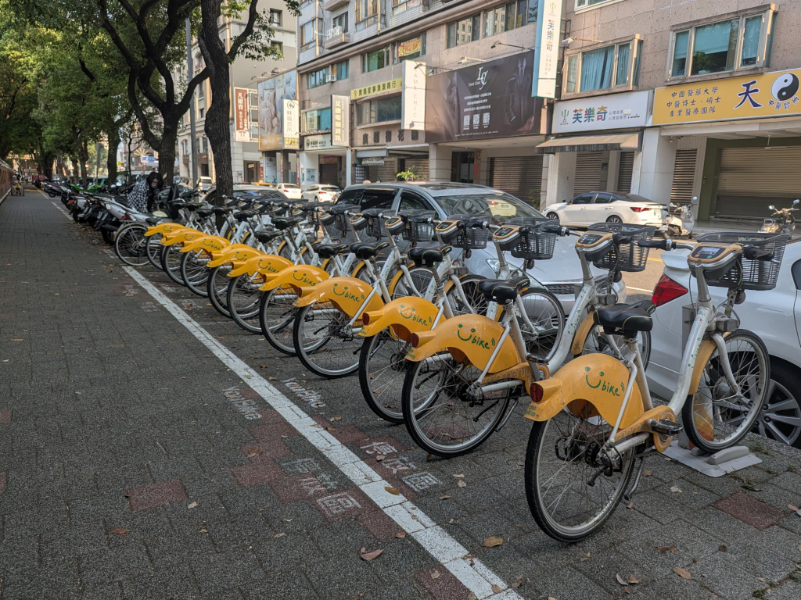
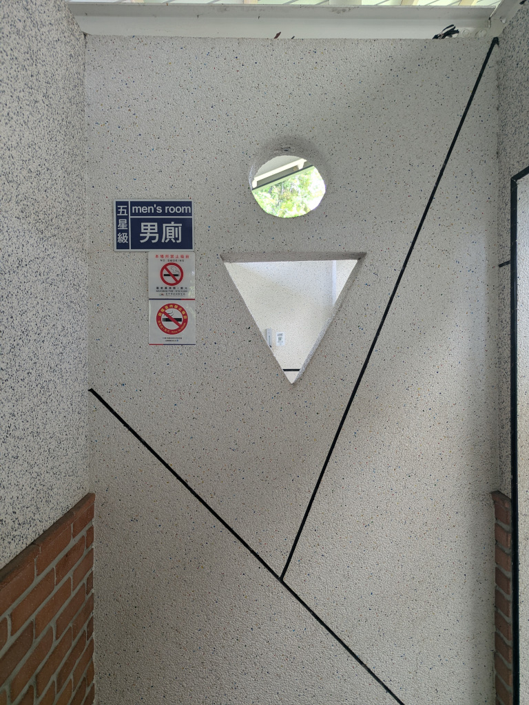
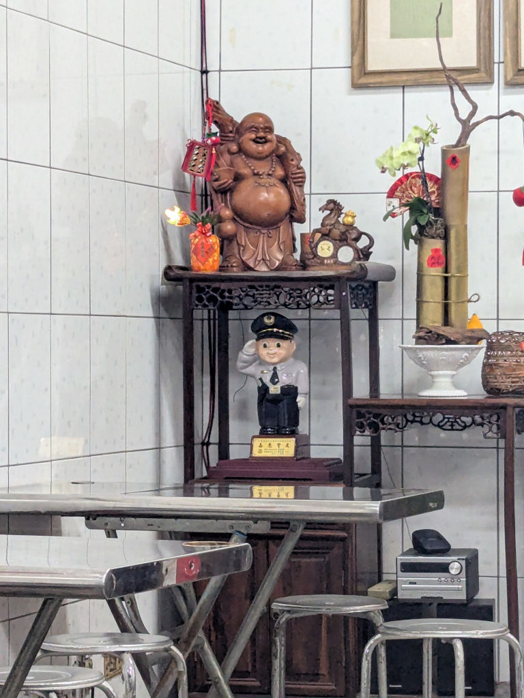
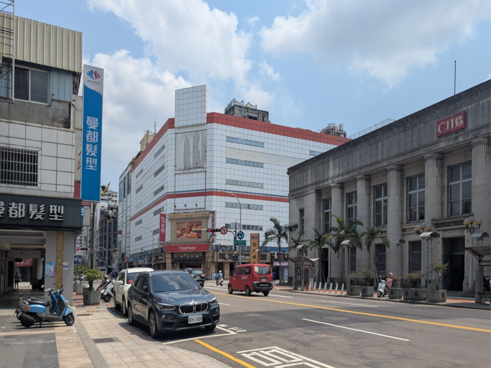
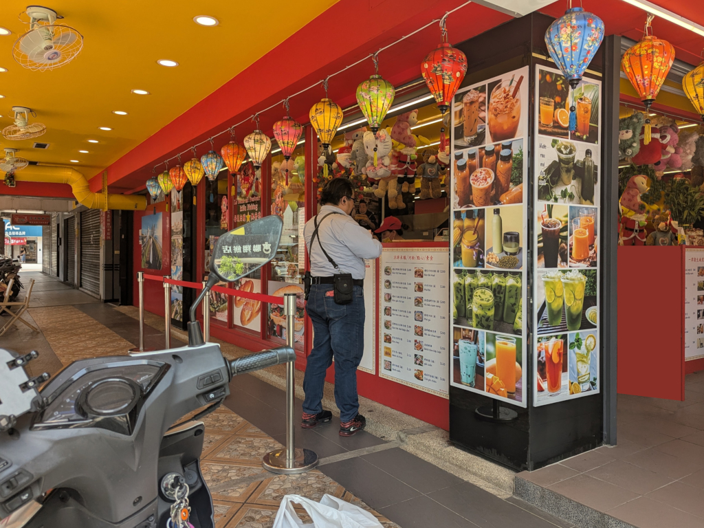
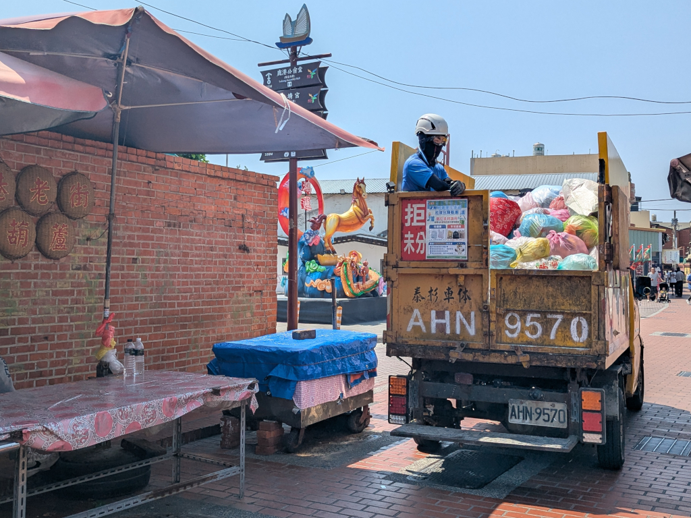
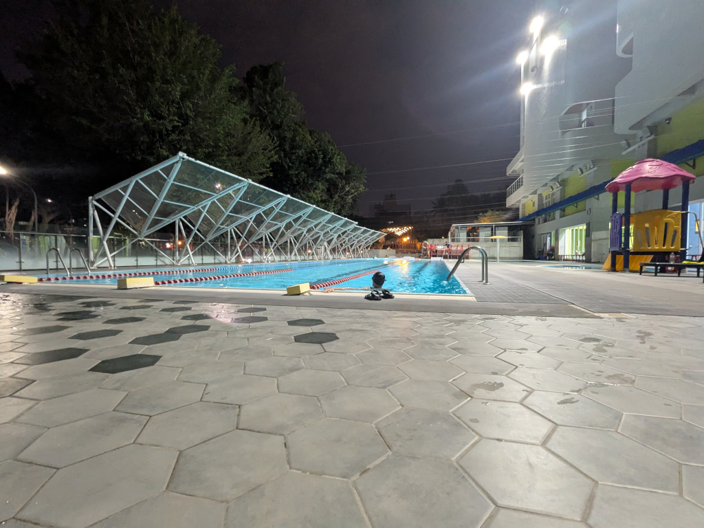

 Having a snack at the Senior Center 不老夢想125號. | ||
Miscellaneous Pictures  This horse statue stands in a square in 鹿港 (Lugang), bearing the phrase 鴻運 ("Great Fortune") for this year, the Year of the Horse. One morning on a walk to a nearby market, we passed this row of You Bikes (or UBikes) which we saw all around the city. They are part of the highly popular, government-run public bike-sharing system. You need a Taiwan mobile phone number and an EasyCard or iPASS (Taiwan's public transit cardsnoteEasyCards and iPASSes are more or less the same thing.
The EasyCard originated in Taipei and iPASS in the south. Both are now accepted nationwide on virtually all major transit networks.
) to rent one.
 Why this picture of the "men's room" in Taichung Park? The blue sign declares it to be "五星級" - a 5-star bathroom! (And it was pretty clean for a public restroom in Taiwan.) In the 豆花 (bean jello) stand in the 忠孝路觀光夜市 night market. This building, at the intersection of two major downtown Taichung streets, which I know as the "Taichung Building" since that's what we called it back in the '60s when I was first in Taiwan serving at CCK Air Base (清泉崗, now the Taichung International Airport), was a very popular hang-out for us G.I.s. The 7th floor had a pool hallnoteBelieve it or
not, I never checked out any of the other floors. I know at times, the building served as a department store, and once had a small
amusement park on the roof (with a ferris wheel you could see from the street). It was also the first building in Taichung to have an
escalator, which many of the people in Taichung were quite wary of, often preferring to use the stairs or elevator. where
we used to go to shoot pool with local girls who were real pool sharks (we could never beat them). For NT$10 a game (25¢ at the
time), we could pass the time there, playing game after game. They made good conversation (they spoke broken English, but were able to
converse with us easily), and were often very funny, making for some relaxing fun. (It was from them where I first ate 生力麵 (instant
noodles) which they often prepared right at the pool tables, often making a bowl for us. It was a good way to keep us coming back.)
 We passed this colorful restaurant front as we were walking along the street one morning. (That's not Zhiwei.) Meihui told us it's a very popular Vietnamese restaurant, and during lunchtime, there is usually a long line to get food. It's carry-out only, no inside seating. The small sign on the back of this garbage truck in Lugang reads, "拒分" which translates to "If your garbage isn't sorted, we won't pick it up." Walking back from the 忠孝路觀光夜市 night market, we passed this swimming pool (with someone swimming in it on this beautiful evening) belonging to the City of Taichung Changchun Youth Sports Center. | ||
{kind=link}
{kind=link}